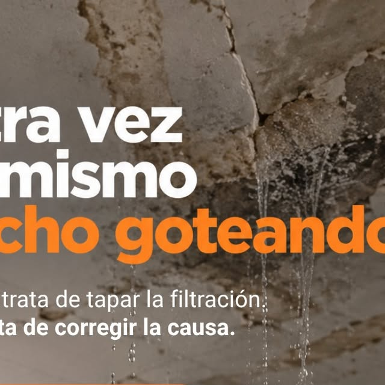
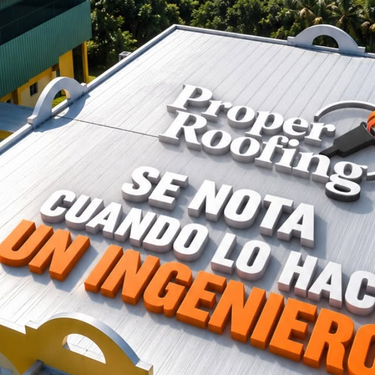
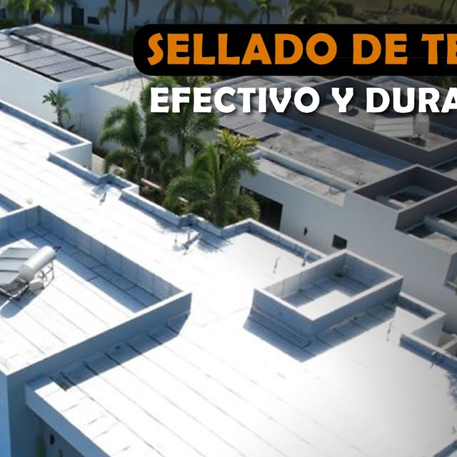

Carolina · Puerto Rico
Sellado e impermeabilización documentados paso a paso, con membrana Danosa y garantía de hasta 10 años en Carolina y toda la isla.
Lo que hacemos

Sellado efectivo y duradero que se nota: se documenta antes, durante y después.
Sistema de membrana asfáltica Danosa aplicado por manos que saben.

Corregimos la causa, no solo tapamos la filtración: adiós al techo goteando.

Respaldo por escrito de hasta 10 años en tu sistema de sellado.

Estimados gratis y métodos de pago flexibles, hasta 24 meses sin intereses.
Galería





Quiénes somos
Proper Roofing PR, de Carolina: sellado e impermeabilización documentados como se debe, con membrana asfáltica Danosa, reparación de filtraciones y garantía de hasta 10 años. Estimados gratis.
Llamar 787-422-2238Preguntas frecuentes
Estamos en Carolina, Puerto Rico.
Sellado e impermeabilización y más: Sellado e impermeabilización, Membrana asfáltica Danosa, Reparación de filtraciones.
Escríbenos por WhatsApp al 787-422-2238 o llena el formulario de contacto y te respondemos por WhatsApp.
Sí, síguenos en Instagram como @properroofingpr.
Sí, garantía de hasta 10 años con membrana Danosa. Estimados gratis en Carolina: 787-422-2238.
Toma final · acción
Pide tu estimado gratis y mira cómo documentamos tu techo antes, durante y después.
787-422-2238Sellado e impermeabilización · @properroofingpr · Carolina, Puerto Rico